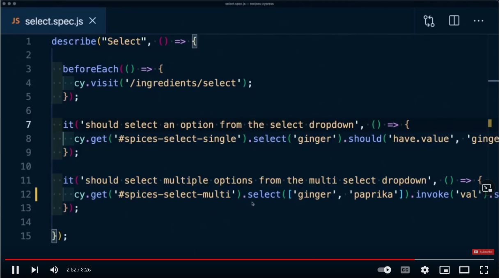

Kreiranje web sajta
Osnova svakog web sajta je njegov sadržaj.
Kao što kažu - "Content is the king".
Međutim, čist sadržaj, bez ikakvog truda uloženog u izgled sajta i korisničko iskustvo,
će biti čist promašaj. Ako želimo da budemo kompletan autor web sajta, postoje neke
veštine kojima treba da ovladamo čak i pre nego što počnemo da učimo tehnologiju:
- informaciona arhitektura
- dizajn sadržaja
- optimizacija za pretraživače
Ove veštine predstavljaju dodirne tačke za inače često suprotstavljene aspekte web sajtova - informativnosti i atraktivnosti, odnsono aktivnosti kreiranja sadržaja i dizajna.
HTML - sadržaj
HTML (HyperText Markup Language) je tehnologija kojom definišemo sadržaj web stranica. Ona ne služi za formatiranje već da jasno definišemo šta-je-šta u našem dokumentu. HTML je tekstualni dokument koji je lako napraviti, a zasniva se na uvođenju "oznaka" koje definišu HTML elemente.
CSS - izgled

JavaScript - interaktivnost
Pomoću JavaScripta možemo isprogramirati šta se dešava na našoj web stranici. To mogu biti jednostavne animacije, elementi korisničkog interfejsa (npr. dugmići ili meniji), ali i prave-pravcate web aplikacije.